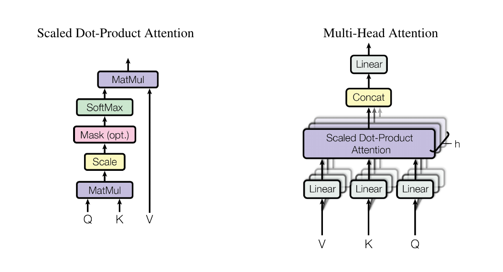

04 · METHOD
Attention(Q,K,V) = softmax(QK^T / √d_k)V

(left) Scaled Dot-Product Attention; (right) Multi-Head Attention — several attention layers in parallel. Figure 2, paper p. 4.
Visual: Figure 2 (paper p. 4); formula and text: §3.2 (paper p. 4–5).